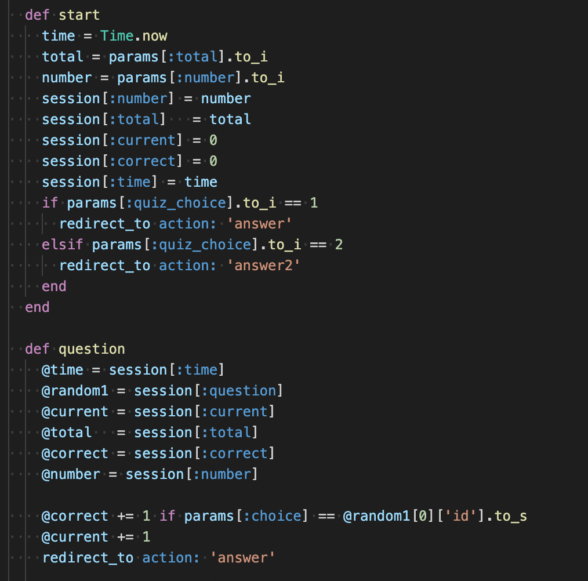
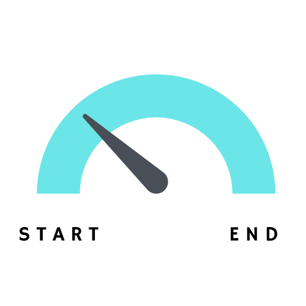

YUGI-Quiz
開発環境
Ruby / Ruby on Rails / MySQL / GitHub / Heroku / Visual Studio Code
-
概要
制作時間 40時間 URL https://yugi-quiz.herokuapp.com/ ID admin PASS pass
OUTLINEアプリケーションの概要
オリジナルアプリケーションとして、自身が１から作っていけるかの確認のために開発しました。
名前の通り、遊戯王カードの30秒クイズアプリになります。
主な機能は、クエスチョン機能、アンサー機能、時間制限機能、ランダム出題機能、問題作成機能（管理者機能）になります。
トップページにアクセスすると、モンスター、魔法、罠、全てから出題範囲、何問答えるか、画像問題かテキスト問題かの三個の項目を選ぶことができます。
アンサーページに飛ぶと、選んだ出題範囲の問題が、画像orテキストで出題され、正解の答えと同一出題範囲の答えがランダムに選ばれ選択肢として表示されます。またヒントボタンを押すことで隠れている画像orテキストを表示できます。
30秒を超える、または選択した問題数が終わると、何問中何問正解回答をしたかが表示されます。
-
開発に至った経緯
近頃、新しい遊戯王アプリが開発され、にわかに遊戯王が盛り上がってきているのを体感し、遊戯王世代である自分自身や友人たちの間で昔のカードの話になることがありました。
現状カードの種類が１万種類をこえている中で、私たちの一番楽しかった時代の記憶を友達と共有し盛り上がりたいと思い、クイズアプリを作成しました。
-
開発で工夫したこと
１つ目が時間制限のかけ方です。アクションを複数に分け、最初のアクション実行時にタイムをとり、以後他アクション実行時に最初のアクションのタイムとの差を求めることで時間制限をかけることに成功しました。
２つ目がsessionの使い方です。選択した出題範囲や答えなどをDBに保存するわけにはいかず、アクション間をsessionで仲介し、無事にデータの引き渡しを行うことに成功しました。
３つ目が問題や答えの取得について。データベースから問題や答えを持ってくる際にwhereで条件指定をし、更に最初に取得したものを除いた偽の答えの情報を取得し、１つにしてランダムに表示するのを工夫しました。 取得したデータが、ハッシュやActiveRecord::Relationなどが混在してしまい、上手に表示するのに苦労しました。
-
今後実装したいと思っていること
１つ目に時間制限が目に見えるような機能を実装したいです。
実際に３０秒という短い時間で制限を設けたが、どのぐらい時間が経ったのかなど全くわからず、残り時間をリアルタイムで確認できる機能を実装したいです。
２つ目にランキング機能を実装したいです。
今回はユーザー機能をつけていないため実装していないが、ユーザー同士での競争や比較ができるようにユーザー機能を実装してランキング機能を実装したいです。